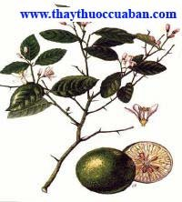
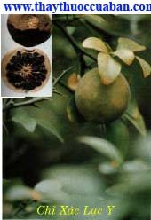

Tên khác
Tên Việt Nam: Vị thuốc chỉ thực còn goi Trấp, Chấp, Kim quất, Khổ chanh, Chỉ thiệt, trái non của quả Trấp, Đổng đình, Niêm thích, Phá hông chùy, Chùy hông phích lịch (Hòa Hán dược khảo).
Tên khoa học: Fructus ponciri Immaturi, Fructus aurantii Immaturi
Họ khoa học: Thuộc họ Cam (Rutaceae).
Cây chỉ thực
( Mô tả, hình ảnh cây chỉ thực, thu hái, chế biến, thành phần hoá học, tác dụng dược lý ....)
Mô tả:
Chỉ thực là quả trấp hái vào lúc còn non nhỏ của cây Citrus Hystric D.C cây nhỡ rậm lá, có gai dài. Lá đơn mọc so le, hình bầu dục, dài 7-10cm. Hoa năm cánh trắng, thơm. Quả có vỏ sù sì, màu vàng nhạt, vỏ dày, vị đắng nhiều hạt (Xem thêm Chỉ xác).
Địa lý:
Cây mọc hoang ở Nghệ Tĩnh, Cao lạng, Hà Bắc, Thanh Hóa.
Thu hái, sơ chế: Vào tháng 4-6 lúc trời khô ráo, thu nhặt các quả non rụng dưới gốc cây thì được Chỉ thực. Dùng quả có đường kính dưới 1cm thì để nguyên, quả có đường kính trên 1cm thì bổ đôi theo chiều ngang, khi dùng rửa sạch đất bụi, ủ mềm, xắt lát hay bào mỏng, sao giòn.
Phần dùng làm thuốc:
Quả non rụng phơi khô.
Mô tả dược liệu:

Chỉ thực gồm các quả nguyên hình cầu và quả bổ đôi hình bán cầu. Quả nguyên đường kính 0,5-1cm, vỏ ngoài màu nâu đen, có vết tích của cuống quả, bên phía đối diện có một chấm nhỏ lồi là vết tích vòi nhụy đã rụng. Quả bổ đôi đường kính 1-1,5cm. Mặt cắt ngang có một vòng vỏ quả ngoài mỏng, màu nâu, sát vỏ có một vòng vỏ quả ngoài mỏng, màu nâu, sát vỏ có một túi tinh dầu lỗ chỗ, một lớp cùi màu ngà vàng hoặc vàng nâu nhạt, hơi lồi lên, giữa là ruột màu đen nâu, có những múi hình tia nan hoa bánh xe. Chất cứng chắc, vị đắng mát, mùi thơm nhẹ. Nếu loại vỏ mỏng là Cẩu quất (quít). Dùng thứ quả gần chín, còn xanh vỏ, đã bổ đôi, cùi càng dầy càng tốt, mùi thơm, ruột bé trắng ngà, để lâu năm cứng chắc không ẩm mốc là tốt. Quả nhỏ, vỏ dày, trong đặc, chắc, nhiều thịt, nhỏ ruột không mốc, mọt là tốt. Thứ to nhiều ruột là xấu.
Loại sản xuất ở Tứ Xuyên vỏ ngoài màu xanh lục, mặt trong màu trắng vàng, dày vỏ, cứng, mùi thơm hơi đắng lá thượng phẩm.
Loại sản xuất ở Giang Tây màu hơi đen có dạng nốt ruồi lồi lên, thịt nỏ dày cứng chắc, mùi nồng nặc cũng tốt. Loại sản xuất ở Giang Tô vỏ ngoài mau xanh lục đậm, hơi vàng, thô hơn, chất nhẹ, mùi vị nhẹ, xấu hơn.
Bào chế:

Giấp nước vào cho mềm,moi bỏ các múi và hạt ở trong rồi xắt nhỏ phơi khô sao với gạo nếp hoặc cám (rồi bỏ cám đi), có khi sao cháy tồn tính rồi tán bột.
Cách dùng:
Sao dòn có tác dụng tiêu tích, hạ khí, trừ đàm giúp tiêu hóa, sao tồn tính có tác dụng cầm máu. Chỉ thực để lâu năm càng tốt.
Bảo quản:
Để nơi khô ráo, tránh ẩm.
Thành phần hóa học:
Hesperidin, Neohesperidin, Naringin(R F Albach và cộng sự, Phytochemistry 1969, 8 (1): 127).
Synephrine, N-Methyltyramine(Hà Triều Thanh, Trung Dược Chí 1981, 12 (8): 345).
Vỏ quả chứa chất dầu 0,469%, trong đó có a-Pinene, Limonene, Camphene, g-Terpinene, p-Cymene, Caryophyllene (Nobile Luciano và cộng sự, C A 1969, 70: 31620b).
Tác Dụng Dược Lý:

Chỉ thực và Chỉ xác đều có tác dụng cường tim, tăng huyết áp do thành phần chủ yếu là Neohesperidin nhưng không làm tăng nhịp tim. Thuốc có tác dụng co mạch, tăng lực cản của tuần hoàn ngoại vi, tăng co bóp của cơ tim, tăng lượng cGMP của cơ tim và huyết tương nơi chuột nhắt. Chỉ thực còn có tác dụng tăng lưu lượng máu của động mạch vành, não và thận, nhưng máu của động mạch đùi lại giảm (Trung Dược Học).
Nước sắc Chỉ thực và Chỉ xác đều có tác dụng ức chế cơ trơn ruột cô lập của chuột nhắt, chuột lang và thỏ, nhưng đối với chó đã được gây rò dạ dày và ruột thì thuốc lại có tác dụng hưng phấn làm cho nhịp co bóp của ruột và dạ dày tăng. Đó cũng là cơ sở dược lý của thuốc dùng để trị chứng dạ dày sa xuống, dạ dày gĩan, lòi dom, sa trực trường... Kết quả thực nghiệm cho thấy Chỉ thực và Chỉ xác vừa có tác dụng làm giảm trương lực cơ trơn của ruột và chống co thắt, vừa có thể hưng phấn làm tăng nhu động ruột, do trạng thái chức năng cơ thể, nồng độ thuốc và súc vật thực nghiệm khác nhau mà có tác dụng cả hai mặt ngược nhau, như vậy dùng thuốc để điều chỉnh sự rối loạn chức năng đường tiêu hóa ở trạng thái bệnh lý là tốt (Trung Dược Học).
Nước sắc Chỉ thực và Chỉ xác có tác dụng hưng phấn rõ rệt đối với tử cung thỏ có thai hoặc chưa có thai, cô lập hoặc không, nhưng đối với tử cung chuột nhắt cô lập lại có tác dụng ức chế.tác dụng hưng phấn tử cung của thuốc phù hợp với kết quả điều trị chứng tử cung sa có kết quả trên lâm sàng (Trung Dược Học).
Chỉ thực có tác dụng lợi tiểu, chống dị ứng. Chất Glucozit của Chỉ thực có tác dụng như Vitamin P làm giảm tính thẩm thấu của mao mạch (Trung Dược Học).
Vị thuốc chỉ thực
( Công dụng,Tính vị, quy kinh, liều dùng .... )
Công dụng:

Tả đờm, hoạt khiếu, tả khí (Bản Thảo Diễn Nghĩa).
Tả Vị thực, khai đạo kiên kết, tiêu đờm tích, khứ đình thủy, thông tiện bí, phá kết hung (Dược Phẩm Hóa Nghĩa).
Hành khí trệ, tan đờm, dẫn khí xuống qua đường đại tiện (Trung Dược Học).
Phá khí, tiêu tính, đồng thời có tác dụng tả đàm, trừ bỉ tích, hành khí (Lâm Sàng Thường Dụng Trung Dược Thủ Sách).
Tính vị:
Vị đắng, tính hàn (Bản Kinh).
Vị chua, hơi hàn, không độc (Biệt Lục).
Vị đắng, cay (Dược Tính Bản Thảo).
Vị đắng, tính hơi hàn (Trung Dược Học).
Vị đắng, tính hơi lạnh. (Lâm Sàng Thường Dụng Trung Dược Thủ Sách).
Quy kinh:
Vào kinh Vị, Tỳ (Bản Thảo Kinh

Sơ).Vào kinh Tâm Tỳ (Lôi Công Bào Chế Dược tính Giải).
Vào kinh Can, Tỳ (Bản Thảo Tái Tân).
Vào kinh Tỳ, Vị (Trung Dược Học).
Vàokinh Tỳ, Vị (Lâm Sàng Thường Dụng Trung Dược Thủ Sách).
Chủ trị:

Trị ngực bụng căng đầy, thực tích đàm trệ, đại tiện không thông (Lâm Sàng Thường Dụng Trung Dược Thủ Sách).
Liều dùng: Dùng từ 4 – 12g.
Kiêng kỵ:
Tỳ Vị hư yếu, phụ nữ có thai, không nên dùng (Trung Dược Học).
Không có khí trệ thực tà, tỳ vị hư hàn mà không có thấp và tích trệ thì cấm dùng: Sức yếu và đàn bà có thai nên thận trọng (Lâm Sàng Thường Dụng Trung Dược Thủ Sách).
Ứng dụng lâm sàng của vị thuốc chỉ thực
Trị ngực đau tức, đau cứng dưới tim, đau xóc dưới sườn lên tim:
Chỉ thực (lâu năm) 4 trái, Hậu phác 120g, Phỉ bạch 240g, Qua lâu 1 trái, Quế 30g, nước 5 thăng. Trước hết sắc Chỉ thực, Hậu phác, lấy nước bỏ bã, xong cho các thứ thuốc khác vào sắc, chia làm 3 lần uống (Chỉ Thực Phỉ Bạch Thang - Kim Quỹ Yếu Lược Phương).
Trị đau nhức trong ngực (Hung tý thống):
Chỉ thực tán bột uống với nước lần 12g, ngày 3 lần, đêm 1 lần (Trửu Hậu Phương).
Trị bôn đồn khí thống:
Chỉ thực sao, tán bột, mỗi lần uống 12g, ngày 3 lần, đêm 1 lần (Ngoại Đài Bí Yếu).
Trị phong chẩn ngoài da:
Chỉ thực tẩm giấm, sao, chườm vào (Ngoại Đài Bí Yếu).
Trị sa trực trường do lỵ:
Chỉ thực, mài trên đá cho nhẵn, rồi sao với mật ong cho vàng, chườm vào cho đến khi rút lên (Thiên Kim Phương).
Trị trẻ nhỏ lở đầu:
Chỉ thực đốt cháy, trộn mỡ heo bôi vào (Thánh Huệ Phương).
Trị ngực đau do thương hàn, sau khi đau bụng hàn giữa ngực bỗng nhiên đau ngột:
Chỉ thực sao với cám, tán bột, mỗi lần uống 8g, ngày 2 lần (Tế Sinh Phương).
Trị sinh xong bụng đau:
Chỉ thực sao cám, Thược dược sao rượu, mỗi thứ 8g, sắc uống hoặc tán bộtuống (Tế Sinh Phương)
Trị âm hộ sưng đau cứng:
Chỉ thực 240g, gĩa nát, sao, gói trong bao vải, chườm lên chỗ đau, khi nguội sao chườm tiếp (Tử Mẫu Bí Lục Phương).
Trị táo bón:
Chỉ thực, Tạo giáp 2 vị bằng nhau, tán bột, trộn với hồ bột làm thành viên uống (Thế YĐắc Hiệu Phương).
Trị trẻ nhỏ bị các loại trĩ kinh niên:
Chỉ thực tán bột, luyện với mật ong làm viên to bằng hạt ngô đồng, mỗi lần uống 30 viên lúc đói (Tập Nghiệm Phương).
Trị trường vị tích nhiệt, bụng căng đầy, táo bón:
Chỉ thực, Bạch truật, Phục linh, Thần khúc, Trạch tả, Đại hoàng mỗi thứ 12g, Hoàng liên 4g, Sinh khương 8g, Hoàng cầm 8g. Tán bột làm viên hoặc sắc uống (Chỉ Thực Đạo Trệ Hoàn - Lâm Sàng Thường Dụng Trung Dược Thủ Sách).
Trị khí huyết tích trệ sau khi sinh, đau bụng, đầy tức không yên:
Chỉ thực 12g, Bạch thược 12g, tán bột hoặc sắc uống (Chỉ Thực Thược Dược Tán - Lâm Sàng Thường Dụng Trung Dược Thủ Sách).
Trị tức ngực, bụng đầy, tiêu hóa kém:
Chỉ thực, Bạch truật, mỗi thứ 12g sắc uống (Chỉ Truật Thang - Lâm Sàng Thường Dụng Trung Dược Thủ Sách).
Trị đầy tức dưới tim, ăn uống không ngon, tinh thần mệt mỏi, hoặc tiêu hóa kém, đại tiện không thoải mái:
Chỉ thực, Hoàng liên, mỗi thứ 20g, Hậu phác 16g, Can khương 4g, Chích cam thảo, Mạch nha, Phục linh, Bạch truật, mỗi thứ 8g, Bán hạ khúc, Nhân sâm, mỗi thứ 12g, tán bột, làm thành viên. Mỗi lần uống 2-12g, ngày 3 lần (Chỉ Truật Thang - Lâm Sàng Thường Dụng Trung Dược Thủ Sách).
Tham khảo:
Phân biệt:
(1) Chỉ thực và Chỉ xác đều là quả phơi khô của hơn 10 cây của chi Citrus và Poncirus học Cam (Rutaceae) nhưng thu hái ở hai thời kỳ khác nhau. Chưa xác định được tên chính xác. Ở Trung Quốc còn dùng Chỉ thực hoặc Chỉ xác với nhiều cây khác nhau như cây Câu kết, Chỉ (Poncirus trifolia Raf), cây Hương viên (Citrus wilsonii Tanaka), cây Toàn đăng hay Câu đầu đăng, Bì đầu đăng (Citrus aurantium L) cây Đại đại hoa (Citrus aurantium L Var Amara Engl). Có nơi còn dùng quả Bưởi non (Citrus grandis Osbeck) bổ đôi, phơi khô để làm Chỉ thực và Chỉ xác.
(2) Chỉ thực gồm các quả nguyên hình cầu và quả bổ đôi hình bán cầu, đó là quả nguyên đường kính 0,5-1cm, vỏ ngoài màu nâu đen, có vết tích của cuống quả, bên phía đối diện có một chấm nhỏ lồi là vết tích vòi nhụy đã rụng. Quả bổ đôi đường kính 0,5-1cm, vỏ ngoài màu nâu đen, có vết tích của cuống quả, bên phía đối diện có một chấm nhỏ lồi là vết tích vòi nhụy đã rụng. Quả bổ đôi đường kính 1-1,5cm. Mắt cắt ngang có một vòng vỏ quả ngoài mỏng, màu nâu, sát vỏ có các túi tinh dầu lỗ chỗ, một lớp cùi màu gà vàng hoặc vàng nâu nhạt, hơi lồi lên, giữa là ruột màu đen nâu, có những múi hình tia nan hoa bánh xe. Có chất cứng chắc, vị đắng chát, mùi thơm nhẹ.
Các tài liệu khác viết về chỉ thực
. Cây Trấp còn cho rễ cây gọi là “Chỉ thụ căn bì” dùng ngâm rượu súc miệng để trị đau răng rất hay, hoặc dùng vỏ rễ nấu nước sắc uống trị chứng tiêu ra máu (Bản Thảo Thập Di).
. Cạo lấy vỏ rễ cây, vỏ non trong cây, vỏ cành gọi là ‘Chỉ thụ nhự’ thân cây và vỏ trị thủng húp, bạo phong đau nhức khớp xương. Nó chữa được chứng trúng phong liệt, méo miệng, trong lúc chưa dùng thuốc gì nên cạo lấy vỏ da cây ngâm với rượu 1 đêm khi uống hâm nóng (Bản Thảo Đồ Kinh).
. Muốn khai khí giữa ngực thì dùng Chỉ xác, khai khí ở dưới bụng thì dùng Chỉ thực. Chữa khí trệ thì dùng Chỉ xác, chữa khí kết thì dùng Chỉ thực. Duy cổ ngữ có nói Chỉ xác trị khí, Chỉ thực trị huyết, nhưng xét ra khí hành thì huyết thông, 2 vị đều là thuốc lợi khí chứ không phải là thuốc thông huyết. Cho nên dùng Chỉ thực với Bạch truật thì điều hòa được Tỳ mà dùng với Đại hoàng thì thúc đẩy được khí. Nếu người khí hư trướng mà dùng Chỉ thực thì không khác gì ôm củi mà chữa cháy (Bản Thảo Cầu Chân).
. Chỉ thực vị đắng, cay, chua, hơi hàn, không độc, nhập vào kinh Túc dương minh và Túcthái âm. Tính phù mà lại giáng xuống, hoàn toàn là dương dược, quả nhỏ mà tính mạnh, chữa phần dưới nhanh chóng, chủ về huyết. Phàm chứng ngực bụng bị đẩy trướng, phiền muộn, chất ăn cũ tích tụ, đờm đặc tích huyết, thì nó có công khai thông phá kết mau chóng, làm cho đổ vách xuyên tường. Dùng với Bạch truật trị chứng bỉ thuộc hư, nhưng tính nó dữ tợn, sức nó mạnh, người không có đình trệ kiêm tích thì chớ có dùng bừa bãi mà hại tới nguyên khí. Ông Vương Hải Tàng nói: bổ khí thì lấy Sâm, Truật, Can khương làm tá, để phá khí lấy Khiên ngưu, Mang tiêu, Đại hoàng làm tá (Dược Phẩm Vựng Yếu).
. Cây còn cho lá non gọi là ‘Chỉ thụ nộn diệp’ sắc uống thay nước trà trị các chứng phong, trục phong (Trung Quốc Dược Học Đại Từ Điển).
 Chế độ ăn uống cho người bị cảm cúm
Chế độ ăn uống cho người bị cảm cúm
 Khỏi dứt điểm bệnh cảm cúm không dùng thuốc
Khỏi dứt điểm bệnh cảm cúm không dùng thuốc
Nơi mua bán vị thuốc CHỈ THỰC đạt chất lượng ở đâu?
Trước thực trạng thuốc đông dược kém chất lượng, nguồn gốc không rõ ràng,... xuất hiện tràn lan trên thị trường, làm ảnh hưởng tới hiệu quả điều trị cũng như ảnh hưởng tới sức khỏe của bệnh nhân. Việc lựa chọn những địa chỉ uy tín để mua thuốc đông dược là rất quan trọng và cần thiết. Vậy khách hàng có thể mua vị thuốc CHỈ THỰC ở đâu?
CHỈ THỰC là vị thuốc nam quý, được sử dụng rộng rãi trong YHCT. Hiện tại hầu hết các cửa hàng thuốc đông dược, phòng khám đông y, phòng chẩn trị YHCT... đều có bán vị thuốc này. Tuy nhiên người mua nên chọn những địa chỉ có uy tín, đảm bảo chất lượng, có giấy phép hoạt động để mua được vị thuốc đạt chất lượng.
Với mong muốn bệnh nhân được sử dụng những loại dược liệu đúng, chất lượng tốt, phòng khám Đông y Nguyễn Hữu Toàn không chỉ là đia chỉ khám chữa bệnh tin cậy, uy tín chất lượng mà còn cung cấp cho khách hàng những vị thuốc đông y (thuốc nam, thuốc bắc) đúng, chuẩn, đạt chuẩn chất lượng. Các vị thuốc có trong tiêu chuẩn Dược điển Việt Nam đều được nghành y tế kiểm nghiệm đạt chất lượng tiêu chuẩn.
Vị thuốc CHỈ THỰC được bán tại Phòng khám là thuốc đã được bào chế theo Tiêu chuẩn NHT.
Giá bán vị thuốc CHỈ THỰC tại Phòng khám Đông y Nguyễn Hữu Toàn: 90.000vnd/1kg
Tùy theo thời điểm giá bán có thể thay đổi.
+ Khách hàng có thể mua trực tiếp tại địa chỉ phòng khám: Cơ sở 1: Số 481 lô 22 Lê Hồng Phong, Phường Gia Viên, Thành phố Hải Phòng
+ Mua trực tuyến: Thuốc được chuyển qua đường bưu điện. Khi nhận được thuốc khách hàng thanh toán tiền COD.
Tag: cay chi thuc, vi thuoc chi thuc, cong dung chi thuc, Hinh anh cay chi thuc, Tac dung chi thuc, Thuoc nam
Thaythuoccuaban.com Tổng hợp
*************************